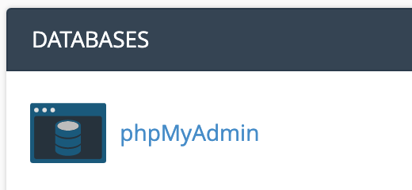
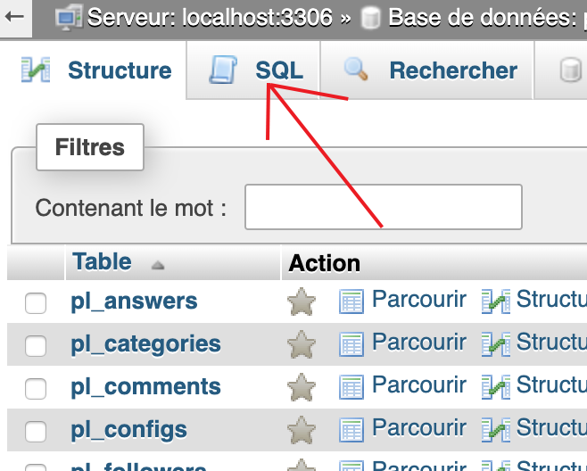
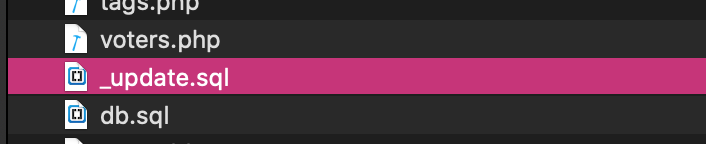
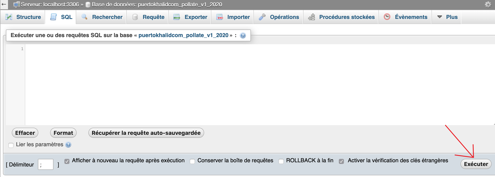
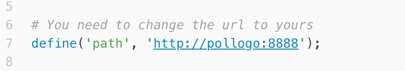

Created: 28/02/2020
By: Puerto Khalid
Email: el.bouirtou@gmail.com
Thank you for purchasing my item. If you have any questions that are beyond the scope of this help file, please feel free to email via my user page contact form here. Thanks so much!
Hi, in this video I will show you an overview about Pollate Script. I hope you enjoy it.
please notice that, if you have any problem or issue with the script or the instraction that I provide please contact me first ASAP in my email el.bouirtou@gmail.com or on my Facebook account fb.com/prof.puertokhalid or the Instagram instagram.com/khalidpuerto. and I will back to you with all help you need.
To update Pollate Script you would do as following:
Please notice that: If you are already have install the v1 of the script make sure to backup your data first.
1) go to phpMyAdmin

2) Select your database, then click in sql tab:

3) go to the files and copy the content of _update.sql file:

4) past the content of _update.sql file in the white box then click the button:

To install Pollate Script you would do as following:
At first you must open the file ./includes/connection.php and edit the following code:
$connect = [
'HOSTNAME' => '**put here your hostname**', // HOST NAME
'USERNAME' => '**put here the database username**', // DATABASE USERNAME
'PASSWORD' => '**put here the database password**', // DATABASE PASSWORD
'DATABASE' => '**put here the database name**' // DATABASE NAME
];
When you have finished modifying the file go to ./db.sql and copy the file content. then go to your server phpMyAdmin. then to sql tab and past the code that you copied.
When you done with this step go to ./includes/define.php and change the path and change the link to your domain directory.

The structure of the files of Pollate Script, is very simple:
To simplify the reading, we have divided the structure into two parts:
I'm using these CSS files in this item.
style.css contains all of the specific stylings for the Pollate Script.
cpanel.css contains all of the specific stylings for the Pollate Script Cpanel.
If you would like to edit a specific section of the site, simply find the appropriate label in the CSS file, and then scroll down until you find the appropriate style that needs to be edited.
If you find that your new style is not overriding, it is most likely because of a specificity problem. Scroll down in your CSS file and make sure that there isn't a similar style that has more weight.
Once again, thank you so much for purchasing this item. As I said at the beginning, I'd be glad to help you if you have any questions relating to this item. No guarantees, but I'll do my best to assist. If you have a more general question relating to the item on Codecanyon, you might consider visiting the forums and asking your question in the "Item Discussion" section.
Puerto Khalid